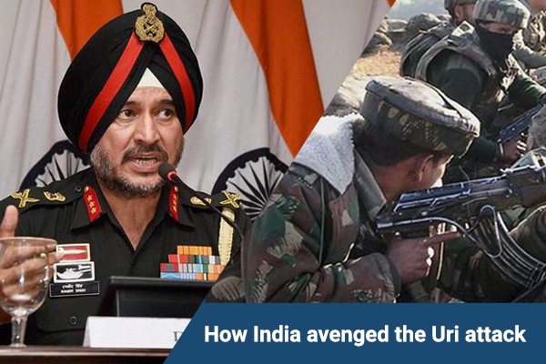

1. Operation begins around 12.30 am on Wednesday. According to reports, paratroopers from Special Forces were involved.
2. The commandos were airdropped at the LoC, from where they crossed over to the Pakistani side.
3. According to sources, Indian commandos entered three kilometres across the Line of Control to conduct the 'surgical strikes'
4. The strikes were carried out in Bhimber, Hotspring, Kel and Lipa sectors, on Pak's side of LoC, according to reports.
5. The location was 500 meters-2 Km across LoC, sources said
6.7 terror launch pads were destroyed during the surgical strike
7.38 terrorists and 2 Pakistani soldiers were killed in Indian Army surgical strikes, no Indian casualties. Those killed included terrorists, their guides and handlers